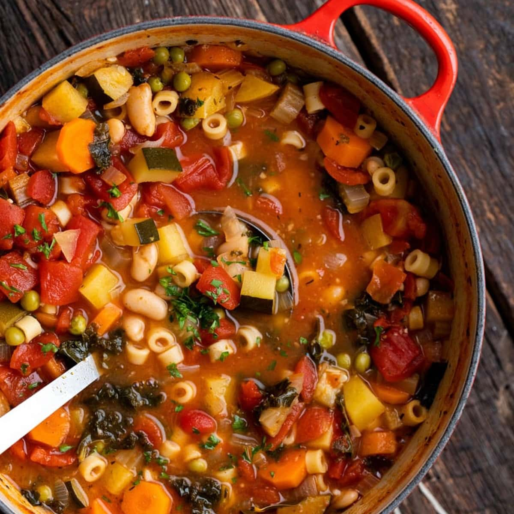

Home
Minestrone

Description
Minestrone is a rustic Italian vegetable soup known for being hearty,
colorful, and incredibly flexible. It typically combines seasonal
vegetables, beans, tomatoes, pasta or rice, and a savory broth, making it
both comforting and nutritious.
Sauté onions, carrots, and celery in olive oil. Add garlic, tomatoes,
broth, beans, and chopped vegetables like zucchini or green beans. Simmer
until tender, then stir in small pasta and cook until al dente. Finish
with salt, pepper, herbs like basil or oregano, and a sprinkle of
parmesan.
Ingredients
- 2 tbsp olive oil
- 1 onion, diced
- 2 carrots, diced
- 2 celery stalks, diced
- 3 cloves garlic, minced
- 1 can (14 oz) diced tomatoes
- 4 cups vegetable broth
- 1 cup small pasta (ditalini or macaroni)
- 1 can (15 oz) beans (kidney or cannellini), drained
- 1 cup zucchini, chopped
- 1 cup spinach or kale
- 1 tsp Italian seasoning
- Salt & pepper (to taste)
- Grated parmesan for serving (optional)
Steps
- Heat olive oil in a pot over medium heat. Add onion, carrots, and
celery; cook until softened, about 5 minutes.
- Stir in garlic for 30 seconds, then add diced tomatoes and Italian
seasoning.
- Pour in vegetable broth and bring to a gentle boil. Simmer 10
minutes.
- Stir in pasta, zucchini, and beans. Cook until pasta is al dente,
about 10 minutes.
- Stir in spinach or kale until wilted. Season with salt and
pepper.
- Ladle into bowls and top with parmesan if you like.